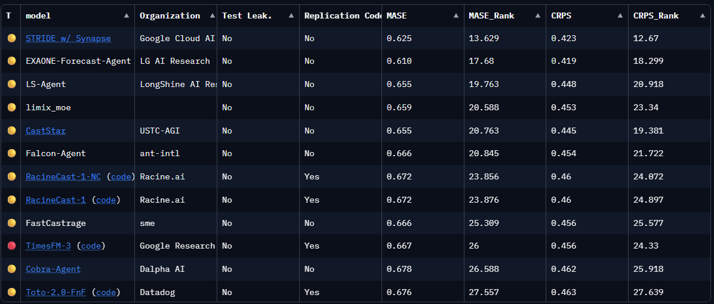
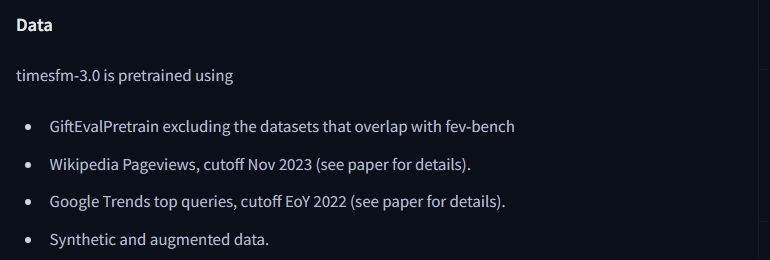

TimesFM-3 showed up twice in today's sweep. google-research/timesfm was ninth on GitHub trending with 1,626 stars gained that day, and google/timesfm-3.0-pytorch was on the Hugging Face trending list with 46,862 downloads in its first month.
Every write-up I opened led with the same fact and stopped there: the weights are non-commercial. Which is true, and I wanted to know what it costs, and nobody had said. So I went and got the leaderboard.
A couple of hours later I had a number for it, and two other things I had not gone looking for.
What Google claims, and whether it holds
Google says TimesFM-3 is the top-ranked model on all three major forecasting benchmarks among all pre-trained foundation models. On GIFT-Eval that holds. I re-derived the board to check, and it sits at position 8 with every entry above it being an agentic system rather than a single model, which is what the qualifier excludes.
The licence is timesfm-non-commercial-license-v1.0. The repository README says commercial or production use of the default pretrained weights is not permitted, and the model card repeats it in prose. Code stays Apache-2.0, and so do the weights for 2.5 and earlier.
GIFT-Eval has a column for test-data leakage, a column for whether replication code exists, and a filter for model type. Nothing on the board says anything about what you may do with the weights. For as long as the field's default was Apache-2.0 that cost nobody anything. TimesFM-3 is the first entry to reach the top of the board under a bespoke non-commercial licence.
Here is what the board says once you add the column.
| what you want | best available | position | normalised CRPS |
|---|---|---|---|
| anything at all | TimesFM-3 | 8 | 0.4557 |
| weights you can ship, any vendor | Granite-PatchTST-FM-r2, IBM | 27 | 0.4672, +2.5% |
| weights you can ship, from Google | TimesFM-2.5, Apache-2.0 | 51 | 0.4903, +7.6% |
Staying inside the Google line costs three times what changing vendor costs.
What TimesFM-3 is
330 million parameters, pretrained on more than a trillion time points. A decoder-only patched transformer, 20 layers at model dimension 1280 with 16 heads, context patch length 32 and forecast horizon patch length 64. The architecture line on the model card reads "Stacked Mixing Transformer with Variate Attention and CPM Iterative RevIN".
What changed against TimesFM-2.5 is that it is natively multivariate. Earlier versions forecast one series at a time. This one alternates causal temporal attention across time with full variate attention across series, and takes past-only and past-and-future covariates without per-task tuning. It also decodes the whole horizon in a single forward pass rather than autoregressively, using what Google calls Contiguous Patch Masking, and that turns out to be the property the ranking is really about.
Getting the numbers out
Scraping the board was the wrong instinct. It is a Gradio Space, so a plain fetch returns a loading spinner and the table only exists after a websocket round trip. I did eventually get it to render, which is where the screenshot below comes from, but by then I had noticed that scraping the rendered table was pointless because the Space stores everything anyway.
results/ holds one all_results.csv per submission with a row for every evaluation configuration, one config.json per submission with its declared metadata, and src/utils.py with the aggregation code. All public, all sitting there.
So I downloaded the directory at a pinned commit and called the leaderboard's own aggregation on it.
# Excerpt. The download loop over results/<model>/ is omitted; it is a thread pool
# over the file list in the Space's API listing.
#
# I did not reimplement the aggregation. Fetching the leaderboard's own src/utils.py
# and calling it means the numbers below are its arithmetic on its data. The only
# shim is the ipdb import in that file, which sits on an error path this never hits.
REV = "b6cb73323064b1c114680e12b4455a262d8d41e8" # snapshot, read 2026-09-03
BASE = f"https://huggingface.co/spaces/Salesforce/GIFT-Eval/resolve/{REV}"
src = requests.get(f"{BASE}/src/utils.py").text.replace("import ipdb", "ipdb = None", 1)
Path("gift_utils.py").write_text(src, encoding="utf-8")
import gift_utils
board = gift_utils.get_grouped_dfs(root_dir="results",
ds_properties="results/dataset_properties.csv")["overall"]
board.columns = ["MASE", "MASE_Rank", "CRPS", "CRPS_Rank"]
# The one thing the board does not have: what you may do with the weights.
def licence(model_link):
repo = re.match(r"https://huggingface\.co/([^/]+/[^/?#]+)", model_link or "")
if not repo:
return "no-weights-link"
tags = requests.get(f"https://huggingface.co/api/models/{repo[1]}").json()["tags"]
hits = [t.split(":", 1)[1] for t in tags if t.startswith("license:")]
return hits[0] if hits else "unstated"
COMMERCIAL = {"apache-2.0", "mit", "bsd-3-clause", "cc-by-4.0", "openmdw-1.0"}
COMMERCIAL is the one judgement call in the whole thing, so I left it as a named constant at the top rather than burying it in a filter. Disagree by editing one line. I left other out of it, because that is what Hugging Face shows for any bespoke licence file, and a bespoke licence has to be read before it can be trusted.
How that aggregation works decides two of the things I found later. For each of the 97 evaluation configurations, every metric is divided by the Seasonal Naive result for that same configuration, so 1.0 means no better than repeating last season. The normalised values are then combined across configurations with a geometric mean:
Geometric rather than arithmetic because these are ratios, and the arithmetic mean of ratios is dominated by whichever configuration happens to have the most headroom. Separately, each model is ranked against all the others within each configuration and those ranks are averaged, which gives CRPS_Rank, and that is what the board sorts on by default.
The snapshot has 127 submission directories. My run produced 128 rows, for a reason I come back to at the end. Dropping the two partial entries leaves 126.
I checked the reproduction against the live board before trusting any of it: STRIDE w/ Synapse 0.625 MASE and 12.67 mean CRPS rank, EXAONE-Forecast-Agent 0.610 and 18.299, TimesFM-3 0.667 and 24.33. Same to every published digit.

MASE_Rank ascending. The yellow dot is agentic, the red dot is zero-shot. Note the Test Leak. column, and note that nothing on the row says anything about the licence. Captured from salesforce-gift-eval.hf.space with headless Chrome driven over the DevTools Protocol, because the Space is a Gradio app served over a websocket and a plain page fetch returns only a loading spinner.The seven above it are all agentic systems
Sort by mean CRPS rank and the top eight are:
| model | type | mean CRPS rank | |
|---|---|---|---|
| 1 | STRIDE w/ Synapse | agentic | 12.67 |
| 2 | EXAONE-Forecast-Agent | agentic | 18.30 |
| 3 | CastStar | agentic | 19.38 |
| 4 | LS-Agent | agentic | 20.92 |
| 5 | Falcon-Agent | agentic | 21.72 |
| 6 | limix_moe | agentic | 23.34 |
| 7 | RacineCast-1-NC | agentic | 24.07 |
| 8 | TimesFM-3 | zero-shot | 24.33 |
Sixteen of the top twenty are agentic. An agentic tier has formed above the foundation models on a benchmark built to compare foundation models, and Google's qualifier is a plain description of that split rather than a hedge.
What I care about is the size of the gap. TimesFM-3's normalised CRPS of 0.4557 is 8.9% behind the top agentic entry at 0.4185. That is what the agentic tier buys, and you pay for it with an orchestrated system that calls models repeatedly per forecast, against 330 million parameters answering once.
I cannot price that properly. Most of the agentic entries publish no weights and no per-forecast cost, and I am not going to invent a figure for how many calls a system I cannot inspect makes. But it is the same trade as test-time scaling everywhere else, where the last few percent costs a different order of magnitude, and whether it is worth paying depends on how many forecasts you run. For most people running forecasts in a loop, it is not.
The leakage column is the one they got right
I went in expecting contamination to be the story. Time-series foundation models have a worse structural problem with it than language models do, because the universe of text is effectively unbounded while the universe of public forecasting datasets is a few dozen collections that everybody reuses. Train on all the public time series and you have very likely trained on the benchmark.
Salesforce handled that in the design. Alongside GIFT-Eval they ship GiftEvalPretrain, roughly 230 billion data points under Apache-2.0, and the dataset card says the collection "has no leakage issue with the train/test split and can be used to pretrain foundation models that can be fairly evaluated on GIFT-Eval". Pretrain on the sanctioned split and the zero-shot claim holds by construction rather than by assertion.
TimesFM-3's model card says that is what it did.

That first bullet is doing two things. It uses the non-leaking split for GIFT-Eval, and it additionally excludes the datasets overlapping fev-bench, which is a different benchmark and which nobody required them to disclose.
So the leakage declarations line up sensibly. Every submission self-declares a testdata_leakage bit in its config.json, and 17 of 125 say Yes. The Yes list is almost entirely models trained before the non-leaking split existed or against a different corpus: TimesFM 1.0 and 2.0, four Chronos variants, IBM's TTM R1 and R2, Lag-Llama. Google declared Yes for 1.0 and 2.0 and No for 2.5 and 3.0, which is what honest declaration looks like from a lab that changed its corpus.
That the old leakage was material rather than theoretical has been checked by someone other than me. Cisco's time series model technical report built its own filtered GIFT-Eval, removing "those datasets known to be part of the TimesFM 2.0 training corpus", and on that filtered board TimesFM-2.5 finished behind Chronos-2 and Toto-1.0. Their metric convention is raw rather than normalised so those numbers do not map onto mine, and I am citing the practice rather than the ranking.
The bit is still only a bit. One value per submission, no dataset list, no audit, filled in by the submitter. But a benchmark that hands submitters a clean corpus and then asks them to declare has done considerably better than one that only asks them to declare, and this is the part of the board I came away impressed by.
The column that is not there
Every submission's config.json carries model, model_type, model_dtype, model_link, code_link, org, testdata_leakage, replication_code_available. The rendered board turns three of those into filters.
The licence sits one hop from model_link, as a tag on the Hugging Face repo it already points at. Joining it is the twenty lines above. Across the snapshot that gives 41 Apache-2.0, 6 CC-BY-NC-4.0, 5 MIT, 4 CC-BY-4.0, 4 CC-BY-NC-SA-4.0, 3 other, 1 OpenMDW-1.0, 6 with an unstated licence, and 56 entries that link no weights at all.
I nearly wrote something stupid about that last number. Thirty-five of those 56 have nothing to publish by construction: six statistical baselines, nine deep-learning models trained per dataset, and twenty agentic systems that are pipelines rather than checkpoints. No weights link mostly does not mean hiding something, and I have not counted any of them as failing the licence test.
TimesFM-3 is one of the three tagged other. Reading its licence file confirms what the repository README already says.
b6cb733. The licence join is mine.Six of the top thirty survive the filter, and the left end of the axis, which is the only part anyone reads, empties out.
Take the systems out too, so what is left is one model answering in one forward pass, the same thing TimesFM-3 is:
--- and with the systems removed, one model one forward pass (43) ---
new was model org lic CRPS CRPSrank
1 27 Granite-PatchTST-FM-r2 IBM TSFM & Rensselaer Pol openmdw-1.0 0.4672 35.19
2 33 TiRex-2-Pretrained NXAI apache-2.0 0.4669 39.86
3 37 Toto-2.0-2.5B Datadog apache-2.0 0.4759 41.88
4 38 Toto-2.0-1B Datadog apache-2.0 0.4784 43.24
5 39 TiRex-2-Zeroshot NXAI apache-2.0 0.4781 43.54
6 40 Toto-2.0-313m Datadog apache-2.0 0.4814 43.81
7 42 Chronos-2 AWS apache-2.0 0.4854 44.66
8 46 tafsut Tafsut-FM (Huawei GTS x E mit 0.4809 47.59
9 49 FlowState-r1.1 IBM TSFM apache-2.0 0.4866 49.70
10 50 Granite-PatchTST-FM-r1 IBM TSFM & Rensselaer Pol apache-2.0 0.4877 50.10
--- where every TimesFM submission sits ---
model lic leak pos CRPS CRPSrank
TimesFM-3 other No 8 0.4557 24.33
TimesFM-2.5 apache-2.0 No 51 0.4903 50.14
timesfm_2_0_500m apache-2.0 Yes 73 0.5504 72.42
TimesFM apache-2.0 Yes 102 0.6804 94.46
IBM, NXAI, Datadog, Huawei, Amazon. TimesFM-2.5, the Apache-2.0 Google model, is at 51, below all of them.
Somebody who reads that Google's forecasting model is number one, tries to deploy it, hits the licence, and falls back to the previous Google version lands 24 places below where they would have landed by changing vendor, for three times the accuracy cost. The fallback most people will reach for is the worst of the available options, which is the sort of thing a licence column would have caught.
None of which is an accusation. Google can license its weights however it likes, and the blog post says a BigQuery integration is coming, so the commercial route is the paid service. That is a coherent business decision whose consequence happens to be invisible on the leaderboard where the model is evaluated.
Two things I found by recomputing
The two headline metrics disagree, and the board sorts on one of them. The normalised geometric mean asks how much error you removed on average. The mean rank asks how often you beat the other 125 entries. Those are different questions and they can invert. ForecastMate has a marginally better normalised CRPS than TimesFM-3, 0.4554 against 0.4557, and a mean CRPS rank seven places worse, 31.79 against 24.33. Read the value column and read the rank column and you get different winners, so say which one you sorted on whenever you quote a position from this board.
There are also two data-quality defects, both silent. The Zeus submission's CSV labels 83 of its 97 rows Zeus and the other 14 GestaltCog/Zeus-100M, so the aggregation emits two partial entries and places them at 39 and 45, each averaged over fewer configurations than everybody else. That is where my 128th row came from. Separately, the iTransformer submission's config.json names the model i_transformer while its CSV says iTransformer, so no metadata joins to it and it appears with no organisation, no model type and no leakage declaration.
Neither changes any conclusion here. Both only show up if you recompute instead of reading, which is roughly the argument for recomputing.
What I would take from this
A leaderboard encodes which failure modes its authors were worried about. GIFT-Eval's authors were worried about contamination, so they built a non-leaking pretraining split and a declaration field, and both work. Licensing was not on the list, so there is no column, and now there is a model at the top that most readers cannot use. Read a board's column list as a statement about what its designers expected to go wrong, then check the gaps yourself.
Rank distance and error distance are different distances. TimesFM-3 is 43 places above TimesFM-2.5 and 7.6% better. The board is dense near the top, so a large jump in position can be a small jump in error. Quote the value alongside the rank, especially in a release post.
Do the re-derivation. A couple of hours, about a hundred and fifty lines, and it produced a filter nobody had applied, two defects nobody had noticed, and a recommendation that inverts the obvious one. The raw results were in a public directory the whole time. Most leaderboards publish theirs the same way and almost nobody opens them.
Say the qualifier. "Rank #1 among pre-trained foundation models" is a careful sentence and Google wrote it. Every piece of coverage I read shortened it, and the seven entries it excludes are where the actual news was.
Every number here comes from the GIFT-Eval leaderboard's own published results at snapshot b6cb73323064b1c114680e12b4455a262d8d41e8, aggregated by the leaderboard's own src/utils.py, read 3 September 2026. The licence join, the filtered boards, the two figures and the two defects are mine. Sources: Google Research on TimesFM-3, the model card, the GIFT-Eval paper, and the Cisco time series model report.